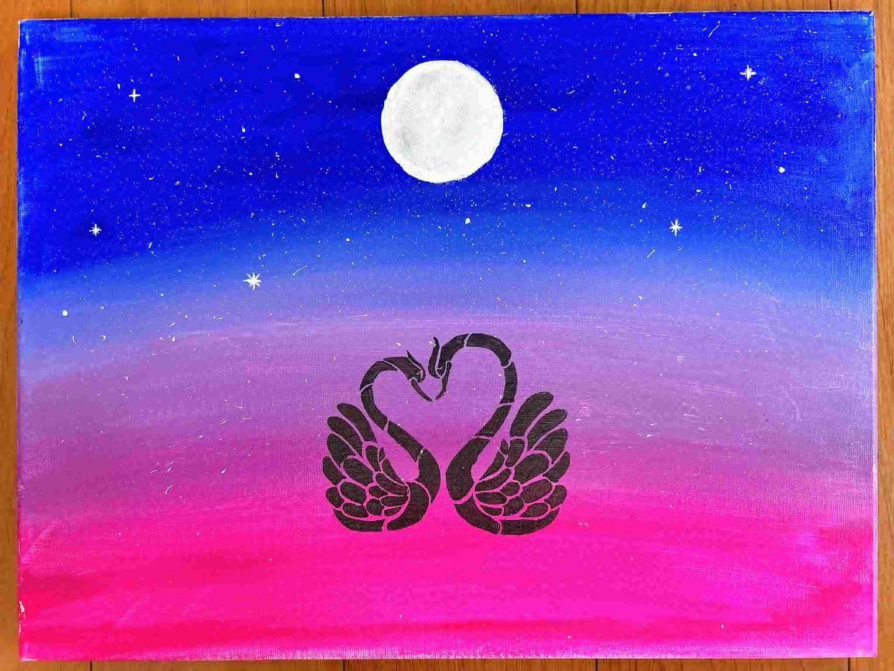

About Me
My name is Xuan Dinh, though I also go by Ophelia. With a major in Economics and a minor in Statistics, I developed a deep interest in working with data. I find fulfillment in applying the knowledge and information I’ve gathered to support effective decision-making. The role of a data analyst allows me to combine my analytical skills with my passion for problem-solving, making it a perfect fit for my abilities and interests. In the long term, I aspire to work in consulting within data analytics, providing meaningful guidance and practical insights that create lasting impact.
One of my greatest strengths is adaptability. As a former international student who moved to the United States, I had to leave behind my family and the familiarity of home. That experience taught me resilience, curiosity, and the ability to embrace challenges with an open mind. I carry this mindset into every project I take on, approaching data not just as numbers, but as opportunities to uncover solutions that drive real-world results. I also see myself as both a dreamer and a doer. Dreaming fuels my creativity, allowing me to look at problems from unique perspectives and find inspiration in everyday life. At the same time, being a doer keeps me focused and grounded, helping me turn ideas into actionable results and overcome challenges with practical solutions.
Beyond data, I enjoy expressing myself through painting. While I am not naturally skilled at drawing, I’ve learned to work with my limitations by exploring silhouette-style art and experimenting with everyday household items such as stencils, aluminum foil, cotton balls, or even bottle caps, to achieve the shapes I envisioned. Here are some of my paintings, which I hope you enjoy!
My Photos